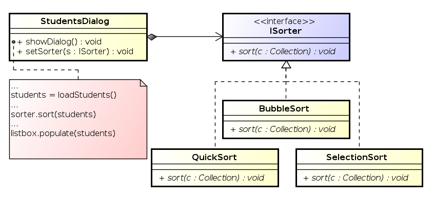
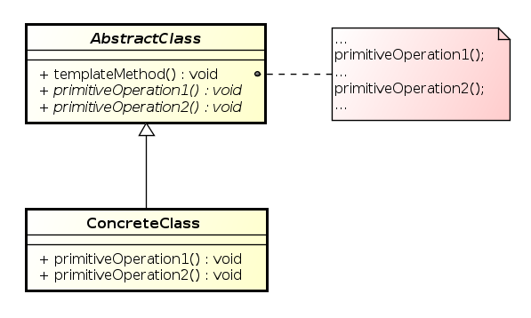
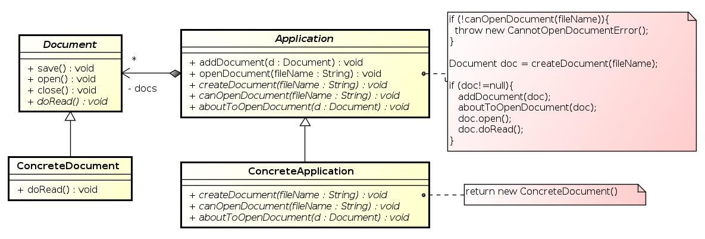
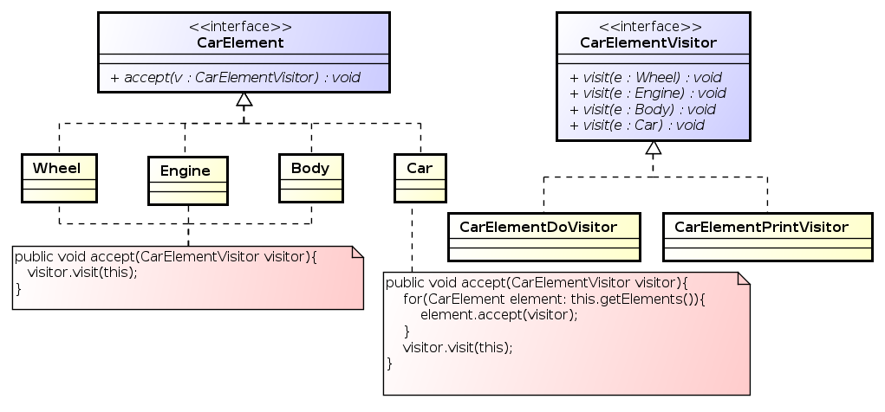

Softverski obrasci i komponente
Obrasci ponašanja
Prof. dr Igor Dejanović (igord at uns ac rs)
Kreirano 2019-11-01 Fri 19:39, pritisni ESC za mapu, m za meni, Ctrl+Shift+F za pretragu
Sadržaj
Obrasci ponašanja
- Bave se algoritmima i raspodelom odgovornosti između objekata.
- Ne definišu samo obrazac strukture već i obrazac komunikacije između objekata.
Iterator
Iterator
Omogućava pristup elementima kolekcije sekvencijalno bez otkrivanja konkretne reprezentacije kolekcije.
Struktura obrasca

Java implementacija
Iterator obrazac je direktno podržan u javinim standardnim bibliotekama –
Interfejsi Iterable<E> i Iterator<E>.
Java implementacija

Java implementacija - While petlja
List<Integer> intList = new ArrayList<Integer>();
Iterator<Integer> i = intList.iterator();
while(i.hasNext()){
Integer a = i.next();
System.out.println(a);
}
Java implementacija - ForEach petalja
Iteratori su podržani direktno u Java programskom jeziku. For-each petlja u
javi se može koristiti za bilo koji objekat koji implementira Iterable<E>
interfejs ili za java nizove.
List<Integer> intList = new ArrayList<Integer>();
for(Integer i: intList){
System.out.println(i);
}
Command
Command
- Enkapsulacija zahteva za obradom u vidu objekta.
- Omogućava kreiranje redova za obradu (Queues) kao i undo operacije.
- Poznat i pod nazivima Action i Transaction.
Struktura obrasca

Saradnja učesnika

Šta dobijamo?
- Razdvajamo objekat koji inicira izvršavanje operacija od onoga koji "zna" kako operaciju treba izvršiti.
- Command objekti su objekti prvog reda. Mogu se tretirati kao i svi drugi objekti.
- Komande se mogu komponovati (upotrebom Composite obrasca) i formirati složenije komande – makro komande.
- Nove komande se lako dodaju – nije potrebno izmeniti postojeće klase.
Mediator
Mediator
- Objekat koji enkapsulira znanje o interakciji grupe objekata.
- Omogućava slabo sprezanje (loose coupling) objekata tako što objekti ne referenciraju jedni druge direktno.
Struktura obrasca
Primer

Saradnja učesnika

Šta dobijamo?
- Složena interakcija objekata je centralizovana – izmena se vrši nasleđivanjem jedne klase.
- Objekti koji stupaju u interakciju su slabo spregnuti – objekte i medijator možemo menjati nezavisno.
- Jednostavniji protokol – veze više-na-više zamenjene vezama jedan-na-više koje su lakše za razumevanje i izmenu.
- Logika interakcije objekata je odvojena od njihovog individualnog ponašanja – inerakcija se lakše analizira.
- Problem koji može nastati – monolitan i previše kompleksan medijator objekat.
Memento
Memento
- Bez narušavanja enkapsulacije beleži i eksternalizuje interno stanje objekta tako da se objekat može kasnije vratiti u identično stanje.
- Poznat i pod nazivom Token.
Struktura obrasca

Saradnja učesnika

Šta dobijamo?
- Očuvavamo enkapsulaciju – memento ne otkriva detalje interne implementacije Originator objekta iako se njegovo stanje čuva van njega. Pristup Memento objektu je moguć samo od strane Originator objekta.
- Pojednostavljen dizajn Originator objekta – klijenti čuvaju stanje objekta kroz Memento objekat.
- Bolja skalabilnost - čuvanje stanja se prepušta klijentima.
- Korišćenje Memento objekata može biti problematično ukoliko je stanje Originator-a definisano velikom količinom podataka.
- U nekim programskim jezicima je teško sprečiti pristup internoj strukturi Memento objekta od strane drugih objekata u sistemu.
Observer
Observer
- Definiše međuzavisnost objekata tako da kada se stanje jednog objekta promeni svi zavisni objekti se automatski obaveštavaju.
- Poznat i pod nazivom Publish-Subscribe.
Struktura obrasca
Saradnja učesnika

Podrška u Javi
- Interfejs
Observeri klasaObservableu paketujava.util. - Mehanizam Listener-a u Swing-u prati ovaj obrazac.
Šta dobijamo?
- Apstraktno sprezanje Observer i Observable objekata. Observable ne zna konkretne klase Observer objekata već komunicira sa njima putem jednostavnog interfejsa.
- Broadcast stil komunikacije. Observable javlja da se promena dogodila. Ne mora se navoditi primalac poruke. Svi zainteresovani osluškivači će dobiti notifikaciju o promeni.
- Ukoliko Observable ne navodi u pozivu poruke šta je promenjeno, Observer-i moraju to sami da ispitaju što može biti "skupo".
Napomene
- Ukoliko Observer posmatra više Observable objekata potrebno je identifikovati objekat koji šalje poruku o promeni – slanje reference na objekat kao parametra.
- Izmena stanja Observable objekta prilikom obrade notifikacije može dovesti do beskonačne rekurzije.
State
State
Izmena ponašanja objekta prilikom promene njegovog internog stanja. Objekat se ponaša kao da je promenio klasu.
Struktura obrasca
Saradnja učesnika
- Context delegira operacije zavisne od stanja objektu state (ConcreteStateX).
- Context može proslediti sebe u zahtevu ukoliko stanje treba da mu pristupa.
- Klijenti koriste isključivo Context, mada mogu, ukoliko je potrebno, postaviti tekuće stanje.
- Odluku o prelasku u novo stanje može doneti Context ili tekući state objekat.
Primer

Šta dobijamo?
- Lokalizacija koda specifičnog za određeno stanje u jednu klasu - izbegavanje velikih switch/if-else iskaza.
- Eksplicitan prelazak između stanja.
Napomene
- Promena stanja: Context ili ConcreteStateX?
- Ukoliko menja ConcreteStateX potrebno je da pristupa Context-u preko interfejsa za promenu stanja.
- Negativno: stanja moraju da znaju jedna za druge.
- Ukoliko Context menja stanje – kod može biti dosta kompleksan kod većeg broja stanja.
- Kreiranje i uništavanje State objekata: jednom pri inicijalizaciji ili pri svakoj promeni stanja.
- Određeni programski jezici podržavaju oblik dinamičkog nasleđivanja – prirodna podrška za State obrazac.
Strategy
Strategy
Definisanje familije algoritama i omogućavanje njihove izmene bez uticaja na klijenta.
Struktura obrasca

Primer

Šta dobijamo?
- Definisanje familije algoritama. Nasleđivanje strategija se može koristiti za implementaciju zajedničke funkcionalnosti algoritama.
- Izmena ponašanja objekta dinamički. Nasleđivanjem kontekst klase može se postići izmena funkcionalnosti ali je ona statičke prirode.
- Eliminacija iskaza uslova (if-else, switch).
- Omogućavamo klijentu izbor algoritma i njegovih performansi (npr. manji utrošak memorije ili brže izvršavanje).
Template Method
Template Method
- Definisanje strukture algoritma pri čemu se definisanje određenih koraka ostavlja klasama naslednicama.
- Struktura algoritma je nepromenjiva ali se određeni koraci mogu promeniti.
Struktura obrasca

Primer

Šta dobijamo?
- Mogućnost definisanja invarijantnih delova algoritma u apstraktnoj klasi a varijabilnih delova u podklasama – sprečava se dupliranje koda.
Invertovanje kontrole – Hollywood principle
Don’t call us, we’ll call you
- Definisanje tzv. hook operacija. Najčešće su prazne ali mogu imati definisano i standardno ponašanje. Za razliku od apstraktnih operacija, hook operacije su opcione (ne moraju se redefinisati).
Visitor
Visitor
- Razdvajanje algoritma od strukture podataka nad kojim operiše.
- Lokalizacija implementacije operacije koja se izvršava nad elementima složene strukture podataka (npr. čvorovima stabla).
Struktura

Saradnja učesnika
Primer

Kada koristiti?
- Objektna struktura sadrži elemente različitih klasa a potrebno je izvršiti operaciju koja zavisi od konkretne klase objekta.
- Više različitih, nesrodnih operacija je potrebno izvršiti nad elementima složene strukture a želimo izbeći "zagađivanje", svih klasa čiji objekti čine složenu strukturu, sa novom metodom za svaku operaciju.
- Hijerarhija klasa objektne strukture se retko menja dok dodavanje novih operacija nad strukturom može biti česta operacija.
Napomene
- Visitor predstavlja implementaciju Double Dispatch mehanizma. Pozvana operacija zavisi istovremeno od tipa konkretnog Visitor objekta kao i od tipa konkretnog elementa strukture nad kojom se operacija vrši.
- Srodne operacije su lokalizovane u jednoj klasi.
Chain of Responsibility
Chain of Responsibility
Izbegavanje jakog sprezanja objekta koji šalje zahtev od objekta koji vrši obradu zahteva tako što se objekti koji vrše obradu uvezuju u listu i daje se šansa svakom u nizu da obradi događaj sve dok neko ne odgovori pozitivno na zahtev (izvrši obradu).
Struktura
Primer

Kada koristiti?
- Više od jednog objekta može da obradi zahtev a obrađivač nije poznat unapred.
- Želimo da uputimo zahtev jednom iz grupe objekata a da ne navodimo konkretnog obrađivača eksplicitno.
- Lista mogućih obrađivača može dinamički da se menja u vreme izvršavanja.
Napomene
- Dve vrste: prosleđivanje zahteva niz lanac i posle obrade ili prekid prosleđivanja.
- Objekat koji vrši obradu nije eksplicitno definisan pa ne postoji garancija da će zahtev biti obrađen.
Literatura
- E. Gamma, R. Helm, R. Johnson, and J. M. Vlissides, Design Patterns: Elements of Reusable Object-Oriented Software, Addison-Wesley Professional, 1994
- M. Grand, Patterns in Java: A Catalog of Reusable Design Patterns Illustrated with UML, John Wiley & Sons, Inc., vol. 1, 2002